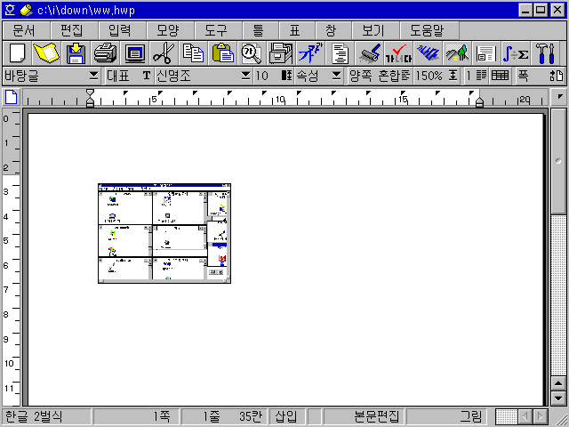
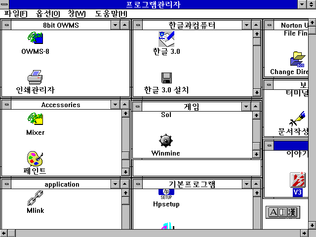
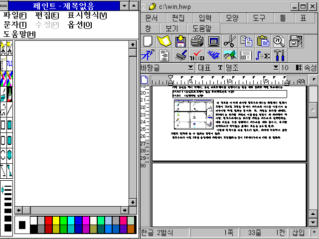

이제 윈도우 시대?
-들어가며...
이 글을 읽고 있는 대부분의 사람들은, 얼마전 신문이나 TV뉴스 상에서의 Windows 95 발표에 대
한 보도를 접해 보았을 것이다. 이제 초보자도 컴퓨터를 배울 필요 없이 막바로 사용할 수 있다
고 착각이 들 정도의 요란한 보도에, 대부분의 사람들은 윈도우로 인해 어떻게 컴퓨터 사용이 변
하고, 어떤 장점을 가지고 있는지, 그 자세한 내용을 알고 싶어할 것이라고 생각한다. 사실 요즘
떠들석한 Windows95 이전에 MS-Windows 3.1에서부터 컴퓨터 사용 환경의 변화가 시작 되었다고
할 수 있기 때문에, 지금 이런 내용을 쓴다는 것이 다소 늦은 점이 있지만, 이제부터 윈도우 환
경이 종전의 DOS환경과 어떤 차이가 있는지, 그리고 뒤에는 요즘 발표된 Windows95에 대한 내용
을 덧붙여 보겠다.
-사용 방식의 종류들.....명령어 방식부터 그림 방식까지.
요즘은 어떤 소프트웨어를 평가할때 User Interface가 얼마나 편리한가(쉽게 말하면 사용자에게
얼마나 효율적이고 편리한 사용 방법을 가지고 있는가)하는 것이 가장 큰 비중이 된 다고 해도
과장된 말이 아닌 것 같다. 아무리 좋은 기능이 있어도, 사용자가 쓰기가 불편하다면, 그 기능이
빛을 못 보는 경우가 많다.
종전의 DOS환경과 윈도우즈와의 가장 눈에 띄는 차이가 바로 사용 방식에 관한 것이다.
우선, 많은 소프트웨어에서 쓰이는 사용방식을 간단히 몇가지로 분류해 보겠다.
첫번쨰로, 명령어 입력 방식이다. 바로 DOS의 사용 방식이다. 명령어를 키보드를 쳐서 입력하고
Enter키를 눌러서 명령어가 전해지면, 프로그램이 그 명령어에 해당되는 기능을 수행하는 방식이
다. 요즘은 DOS외의 응용 프로그램(application)에서는 거의 사라진 듯 하다.
두번째는, 단축키 방식이다. 어떤 특정키를 누르면, 거기에 해당되는 기능이 수행된다. 익숙해
지면, 정말빠른 속도로 사용을 할 수 있기 때문에 요즘 거의 모든 프로그램에서 이 방식도 같이
쓰고 있다.
세번째, 풀다운 메뉴(Full-down menu)방식. 화살표키로 메뉴를 선택하는 방식이다. 메뉴선택에
는 화살표 키와 Enter키 밖에는 사용하기 많으므로, 키보드 자판이 익숙하지 않은 사람에게는 위
의 두 방식보다는 사용이 편리할 것이다. 요즘의 거의 모든 프로그램은 풀다운 메뉴+단축기 방식
은 기본으로 지원하는 경향이다. 즉, 익숙하지 않았을 때에는 풀다운 메뉴 방식을 많이 쓰고, 프
로그램을 많이 써서, 단축키가 다 외어 지면(주로 메뉴 옆에 단축키가 적혀 있다.) 메뉴를 부를
필요가 없이 단축키 만으로 빠르게 작업을 하는 것이다.
그리고 네번째, GUI(Graphic User Interface)라고 불리는 것. 바로 그림을 이용한 메뉴 표시이
다. 아이콘이라고 불리는 작은 그림 조각을 ,마우스로 선택을 한다.
가령 통신을 하기 위해서, 통신 소프트웨어를 실행시키는 일을 예로 든다고 하면 도스에서는

C:\I\DOWN\DUMP0000.PCX
C:\>cd i (통신프로그램이 있는 1)디렉토리로 이동)
C:\I>i (실행파일 실행)
의 경로를 거치게 되지만 윈도우즈에서는 화면에서 전화기
모양이 그려진 그림을 찾아서 마우스로 커서를 이동시켜 눌
러주기만 하면 된다는 것이다. 또, 파일을 복사할 때에도,
DOS에서는 복사할 파일의 이름들을 일일이 다 타자해야 하
지만, 윈도우즈에서는 복사할 파일을 마우스로 선택한다음,
계속 버튼을 누른 상태에서 마우스를 계속 끌어서, 복사할
디렉토리가 적혀있는 곳에서 보튼을 놓으면 된다.
이렇게 명령어를 외울 필요가 없고, 타자에 익숙하지 못한
사람도 편하게 쓸 수 있다는 장점이 있다.
윈도우즈가 이런 GUI를 운영체제 차원에서 도입했다는 것이 DOS에서부터의 가장 큰 변화다.
-그 역사....
물론 최초로 GUI를 지원한 프로그램이 윈도우즈는 아니었고, 윈도우즈가 GUI의 대명사가 되었지
만, GUI를 사용하고 있는 운영체제도 윈도우즈가 유일한 것은 아니다.
GUI를 최초로 도입한 것은 LISA라는 컴퓨터의 운영체제라고 한다. 우리 학교 기술실에도 있는
8BIT컴퓨터 apple을 만든 회사, APPLE사에서 만든 컴퓨터이다. 그러나, 그당시 80년대 초만 해도
그것은 너무 앞선 개념이었던지, 사용의 편리와 그래픽환경의 멋진 구성의 화면을 위해서 다른
컴퓨터 비해 더 비싼 돈을 지불하며 그 컴퓨터를 샀던 사람은 별로 없었다고 한다. 결국 LISA는
대 실패작으로 기록되고, APPLE사의 창업주, 차고안에서 조립한 apple 컴퓨터로 전세계에 본격적
인 개인용 컴퓨터 시대를 열었던 역사적 인물(?) 스티브 잡스를 결국 자기가 차린 회사에서 쫒겨
나게 했다고 전해진다. 그러나, “윈도우즈는 LISA에서 채택한 GUI환경을 마이크로소프트사에서
모방을 한 것이다.”라는 말까지도 있으니, LISA는 꼭 실패작만은 아닌 듯하다.
83년 컴덱스쇼(미국에서 열리는 세계최대 규모의 컴퓨터 전시회)에서 윈도우즈 1.0이 발표되었
고, 그것은 역시 APPLE사의 컴퓨터의 맥킨토시와 아주 흡사한 모습이었다고 한다. 초기의 윈도우
즈는 느린 속도 때문에 큰 관심을 끌지 못했지만, 마이크로 소프트사 회장 빌게이츠의 안목 때문
인지 계속적인 투자로 기능이 향상되어 나갔고, 90년 5월 윈도우즈 3.0의 발표 때부터 본격적인
대접을 받게 되었다. 다시 92년 4월, 버전 3.1이 발표되었고, 93년 3월에는 윈도우즈용 응용 프
로그램이 도스용 프로그램보다 더 많이 팔리는 현상이 시작되었다.
윈도우즈외의 다른 GUI운영체제도 많다. 우선 요즘 Windows 95와 자주 비교되는 IBM사의 OS/2.
마이크로소프트보다 먼저 32bit용 GUI운영체제인 OS/2를 판매했지만, 마이크로소프트의 힘에 밀
려서, 그 기능에 비해 별로 대접을 받지 못하고 있는 듯 하다. Windows 95와의 비교에서, 사용의
편리성면에서는 Windows 95가 더 높은 점수를, 안정성(프로그램이 얼마나 컴퓨터에서 무리없이
안정감있게 실행되는가 하는 것)면에서는 OS/2가 더 높은 점수를 받고 있다.
그리고, 지오웍스 앙상블이라는 프로그램. 윈도우즈 3.0이 나올즈음에 발매되어서, XT에서도 실
행될 수 있다고 해서, 많은 관심을 끌었는데, 이상하게도 버전업(version up.더 높은 버전의 프
로그램 개발)이 되지 않아서, 묻혀 버리고 말았다.
그외에도, 우리나라에서 개발된 GUI환경운영체제도 있었던 것으로 기억이 난다.
그러나 운영체제를 한번 바꾼다는 것이 컴퓨터 사용자에게 있어서 대단한 결심인 만큼, 마이크
로소프트의 윈도우즈의 아성이 무너지는 것은 힘들 것 같다.
- 나아진 것들..
그러면 왜 사용자들이 엄청난 용량과 느린 속도를 감수하면서 윈도우즈를 쓰는지, 그 장점에 대
해 알아보겠다. 편의상 “윈도우”라고 칭하고 있으나, GUI를 쓰는 다른 운영체제의 장점이 되는
부분도 있다것도 생각해 주길 바란다.(그렇지 않으면, 완전히 윈도우즈 제품 광고가 될테니.)
첫째는, 앞에서도 말한 사용 방식에 관한 것이다.
둘째, 다중작업(Multi-tasking)이 가능하다는 것이다. 즉 한번에 두개 이상의 프로그램을 실행
시켜서 작업할 수 있다는 것이다. 예를 들면, 그림이 들어간 문서를 작성해야 한다고 할때, 도스

에서는 그림그리는 프로그램과 워드프로세서를 번갈아 실행
시키면서, 두 프로그램을 여러 번시작했다, 끝내기를 반복해
야 할 작업이라면, 윈도우즈에서는 두개의 프로그램을 동시
에 실행시켜 놓고 간단하게 작업전환을 할 수 있다. 한 화면
을 반갈라서 반은 그림프로그램, 반은 워드프로세서의 화면
을 띄어 놓을 수도 있다. 그리고, 통신으로 파일을 받으면서
게임을 할 수 있다든지,하는 등의 일은 윈도우즈에서는 전혀
신기한 일이 아니다.
셋째, 프로그램간의 데이터 교환의 편리이다.
앞에서의 예를 또 든다면 문서에 그림을 넣을 때, 도스에서는 그림그리기 프로그램에서 그린 그
림을 파일로 저장을 해서, 워드프로세서에서 불러 와야 하지만, 윈도우즈에서는 꼭 파일로 저장
하지 않더라도, 간단히 문서에 그림을 넣을 수 있는 방법이 있다. 클립보드, OLE, DLE등의 기능
인데, 자세한 것은 다른 책을 참고 하는 것이 좋을 것이다.
넷째, 프로그램간의 데이터 공유와 하드웨어 지원의 편리성이다.
도스에서는 모든 프로그램이 각각 독립적으로 데이터를 보유한다. 예를 들면, 통신 프로그램에
서 나오는 한글과, 워드프로세서에서 나오는 한글이 있으면, 그 한글의 글자체가 똑같은 것이라
해도, 각각 다른 파일에 저장되어 있는 것이다. 결국 비슷하거나 같은 내용의 파일이 2개가 존재
한다는 이야기다. 또, 프로그램은 많은 종류의 하드웨어에서 실행되기 때문에, 각기 그 하드웨어
의 종류에 따른 정보가 필요한데, 가령 두 종류의 다른 프로그램이 EVEREX라는 종류의 VGA그래픽
카드(컴퓨터에서 그림을 나올 수 있게 하는 장치의 종류)에서 실행될려고 한다면, 두 프로그램
모두다 EVEREX에 관한 정보를 가지고 있어야 하고, 또 역시 같은 정보의 파일을 2개 중복되어 하
드디스크에 가지게 된다. 그러나, 윈도우즈는 이런 공통된 정보들은 운영체제 차원에서 관리를
하게 되어, 그런 불필요한 데이터의 중복을 없애게 된다. 우리집 컴퓨터의 그래픽카드에 대한 정
보가 저장되어 있는 파일이 한가지만 있으면, 실행되는 프로그램 모두다 그 파일에서 정보를 빼
어 쓰기 되어있다. 따라서, 프로그래머의 잎장에서 보아도, 프로그램을 만들때, 하드웨어의 종류
에 대한 것을 신경을 안 써도 된다. 그러나, 그 것 때문에 윈도우즈를 거치지 않고는 프로그램
자체에서 하드웨어를 직접 제어하는 것이 원칙적으로는 금지 되어 있기 때문에, 실행속도를 느리
게 하는 또 하나의 원인이 되었다. 운영체제를 정부에 비유한다면, DOS는 자유방임주의 정부라고
할 수 있겠고, 윈도우즈는 간섭이 심한 정부라고 할 수 있겠다.
-그러나. 잃어버린 것들..
윈도우즈 사용으로 인해, 가장 퇴보한 부분이 있다면, 앞에서도 여러번 말했듯이 속도에 관한
것이다.대용량의 데이터를 더 빨리 돌리기 위해서는, 기억장치들도 확장이 필요하게 되어, 결국
더 고가의 하드웨어를 요구하게 된다. 간단한 작업을 하나할려고, 한참 하드디스크가 돌아가는
것을 기다리고 있어야 한다면, 그게 과연 진보된 컴퓨터 사용이라고 할 수 있을까?
그리고, GUI라는 것이 항상 좋은 것은 아닌 듯 하다.
DOS를 오랫동안 쓴 사람들은 명령어 입력 방식이 훨씬 속 시원하다고 말한다. 수많은 파일 중에
서 원하는 파일을 골라, 화살표를 움직여 찾아가는 것보다, 아예 그 파일이름을 다 쳐 버리는 것
이 더 빠르다는 것이다. 그리고 프로그램을 실행 시킬떄도 실행파일 이름을 알고 있기만 한다면,
실행파일의 이름을 치는 것이 더 빠르다.
이런 문제점 때문에, 아직 저용량 저속도의 컴퓨터를 잘 쓰고 있는 사람들에게는 윈도우즈를 사
용할 필요성이 별로 안 느껴지고, 느린 그래픽 처리 속도때문에 대부분의 게임은 도스용으로 만
들어 진다.
그러나, 윈도우즈를 위해 조금 변명을 해 준다면, 윈도우즈용 프로그램들도 익숙한 사용자들에
게는 빠른 사용을 위해 단축키 방식을 같이 지원하고 있는 경우가 많고, Windows 95에서는 사용
방식이 좀더 효율적으로 바뀌었고, 좀더 빠르고 나은 게임 개발 환경을 만들어 놓았다는 것이다.

-WINDOWS 95...
당초 윈도우즈 95는 94년에 발표되기로 되어있었다. 그것이 몇번씩이나 연기되고, 이름도
WINDOWS 95로 붙여여서 얼마전에 발표되었고, 한글판도 나왔다. 필자도 아직 써보지는 못했기 때
문에, 자세하게는 못 적겠고, 앞에서 언급한 것은 빼고, 간단히 여기저기서 들은 것들을 정리해
보겠다.
우선 가장 큰 의의는 32BIT용 운영체제라는 것이다. MS-DOS 6.0 같은 경우는 우리 학교 기술실
에 있는 XT에서는 실행이 되고, 최신 기종인 Pentium에서도 실행이 된다. 좋게 말하면 호환성이
좋다라고 말하겠지만, 아무래도 486이나 Pentium같은 상위기종입장에서는 자기 몸보다 작은 옷을
입고 있어서 손해를 본다는 느낌이다. 도스가 좋은 XT를 위해서, 좋은 기종들의 능력을 충분히
발휘하지는 못하게 되어 있다는 말도 된다. 예를 들면, 현재 DOS에서의 메모리 관리는 정말 복잡
하다. EMS386.EXE같은, 귀찮은 방법들이 메모리 관리를 위해서 동원되고 있다. 마치 몸에 작은
옷을 입기 위해서, 여기저기에 천을 덧붙이고 하는 모양새라는 느낌이 든다. 그러나, 32bit운영
체제는 말그래도 32bit에게 맞는 옷이다 보니, 그런 복잡한 방법들이 필요없게 되었다. DOS에서
의 복잡한 config.sys파일 작성에 신경을 더 이상 쓸 필요가 없다는 말이다.
그리고, 도스가 있어야 실행이 되는 종전 버전과는 달리, 이제 완전히 단독으로 운영체제 역할
을 할 수 있게 되었다.
또, 재미있는 것은 최대 영문 256자의 파일이름을 지원한다는 것이다. 종전의 8자에서는 파일의
내용을 충분이 파일이름으로 나타내지 못했는데(한글의 4자가 최대다)이제 파일이름에 “이글은
교지에 쓰는 원고이다 참 쓰기가 힘들다.hwp”정도로 이름을 붙일 수도 있을 것이다.
그리고, 보다 강화된 다중작업, 속도 향상 등이 장점으로 손 꼽힌다.
반면에, 역시 더 대용량의 기억장치를 필요로 한다는 것이 아직도 윈도우즈 시대를 멀게 느껴지
게 하고, 안정성의 부족, 한글윈도우즈 3.1과 영문 윈도우즈 95의 호환성 부족등이 문제점으로
손꼽히고, 한글 윈도우즈 95가 결국 한글의 배열 순서를 무시한 확장완성형으로 만들어 진다는
것이 가장 안타깝다.
-마치며...
올해 가을에 미국최고의 갑부이자, 세계최고의 소프트웨어회사 마이크로소프트사의 회장 빌게이
츠의 세계최대의 컴퓨터 전시회인 컴덱스 전시회에서 다음과 같이 말했다.
“사용자들이 사용법을 배우도록 강요하는 소프트웨어는 사라질 것이다.”
지금 컴퓨터를 배우는 것이 어렵다고 느껴지는 사람들에게는 이말이 무척 반가울 것이다. 앞으
로의 컴퓨터가 지향하는 목표는 보다 쉽고, 보다 효율적인 사용환경일 것이 분명하다. 이 것은
곧 윈도우즈의 사용의 목적이기도 하다.
참고)
*디렉토리(directory):같은 목적을 가진 파일들을 구분하기 위해 만든 디스크상의 가장 공간. 방
이라고 생각하면 되겠다.
*버전(version): 개정판 정도로 변역을 하면 될 것 같다.보통 프로그램이 처음 발표될 때 버전
1.0 부터 시작해서 조금 바뀌면 +0.1, 많이 바뀌면 +1.0 정도로 숫자를 붙여서 프로그램이 개정
될 때 마다 숫자를 올리는 것이 보통이다. 그러나, 이번 윈도우즈 95는 특별히 발행연도를 버전
으로 붙인 것이고, V3+(컴퓨터 바이러스 퇴치프로그램)는 같이 치료할 수 있는 바이러스 개수를
버전으로 붙인 것 등, 숫자를 붙이는 것은 제작자 마음대로다. 따라서 버전이 높다고 해서 반드
시 우수한 제품이라고 착각해서는 안된다.
*config.sys
도스에서 컴퓨터가 처음 켜질때 읽어지는 환경설정에 관한 내용.
주로 메모리에 관한 것이 많다. MS-DOS 6.0에서는 멀티 부팅(Multi-booting)이라는 것을 지원
하는 데 이 것은 프로그램에 따라 필요로 하는 메모리의 종류(EMS나 XMS라고 불리는 것들)가 다
르기 때문에 실행시킬 프로그램에 따라서, 메뉴에서 맞는 것을 골라 실행시킬 수 있는 것이다.
그런 메뉴를 만드는 것도 귀찮은 일이지만, MS-DOS 6.0의 발표전까지는, 여러개의 config.sys의
내용을 가진 파일을 만들어 놓고, 그때마다 필요한 내용의 파일을 진짜 config.sys로 파일이름을
바꾸어 가며 컴퓨터를 다시 부팅시키는 사람도 있었으니, 그나마 메뉴라도 만들 수 있는 것이 편
한 것이었다.
*부팅: 컴퓨터를 켜서, 사용에 필요한 여러 내용을 읽어 들이는 작업. 전원스위치만 누르면 자용
으로 된다고 보면된다.
*XMS: 80286이상의 컴퓨터에서 쓰는 1M이상의 메모리
*EMS: 원래 메모리 확장 보드의 메모리를 말하는 것인데, 보통 소프트웨어적으로 XMS를 EMS로 바
꾸어 쓴다.EMM386.exe도 그런 기능을 가진 프로그램이다.